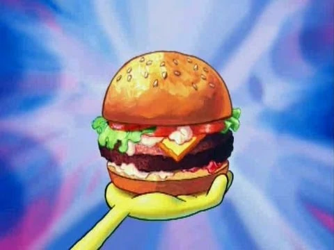

The Krabby Patty Formula!

Recipe Description
Atlas, we've finally got our hands on The Secret Krabby Patty formula!
Now we can finally savour the infamous patty in all it's glory!
Best part is that we can achieve this with just a few ingredients!
Ingredients
- 1 1/3 lb. ground beef (80 percent lean)
- 2 tsp. Old Bay seasoning
- 1 tsp. Black pepper
- 1 tsp. Sea salt
- 4 slices cheddar cheese
- 1/2 c. mayonnaise
- 1 tsp. Old Bay seasoning
- Sesame seed buns
- ketchup
- mustard
- 1 jar dill pickle slices
- 1 red onion, sliced
- 1 tomato, sliced
- 1 lettuce
Directions
- Combine ground beef, Old Bay, pepper and salt
- Coat warmed grill with cooking spray and place patties on the pan.Cooking each side about 4-5 minutes
- Place cheese slice on the krabby patty in the last 30 seconds of cooking
- Make King Neptune's Poseidon Powder Aioli: Stir mayo and Old Bay until thoroughly combined
- Assemble the Sandwich: Spread Poseidon Powder Aioli on the bottom of bun
- Top with a burger patty, ketchup, mustard, pickles, onion slices, tomato and lettuce
- Place the top bun
- Enjoy the Krabby Patty!
Back to the Main Page